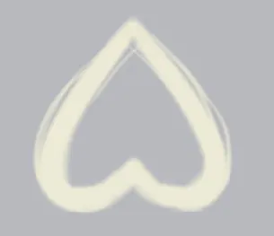
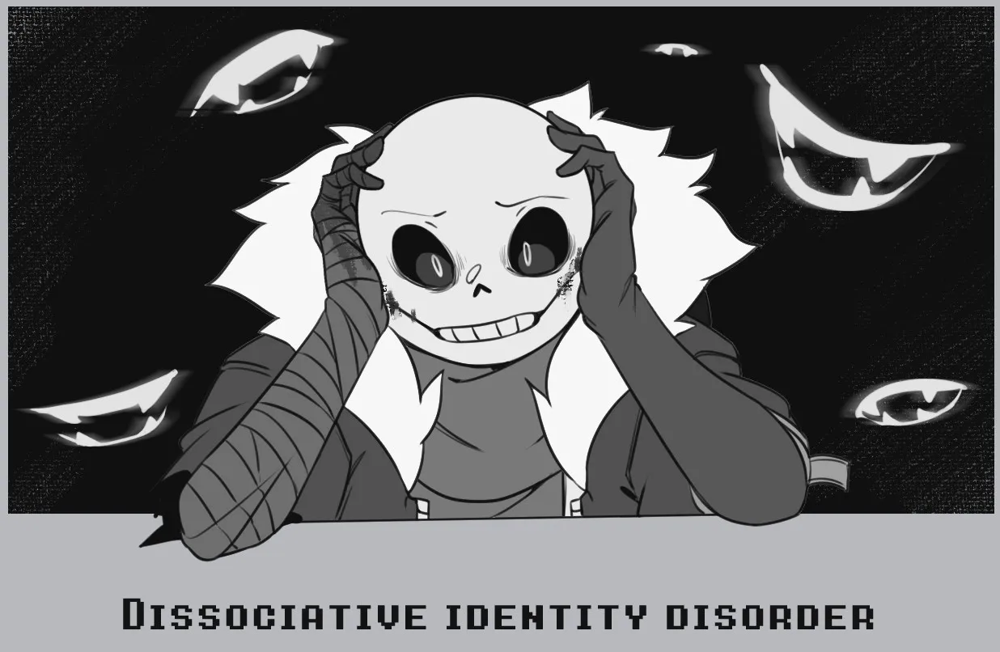
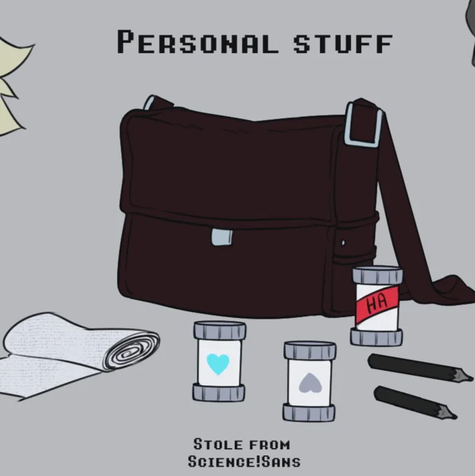
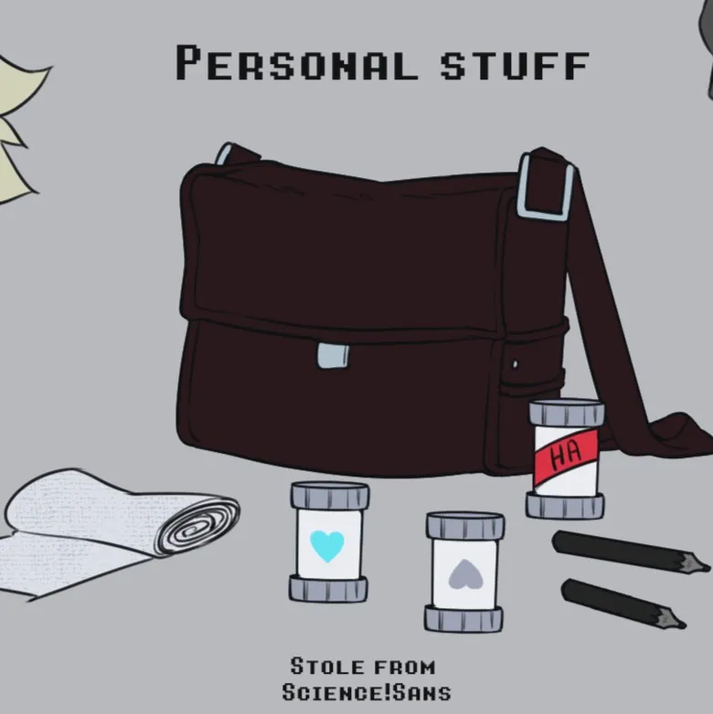
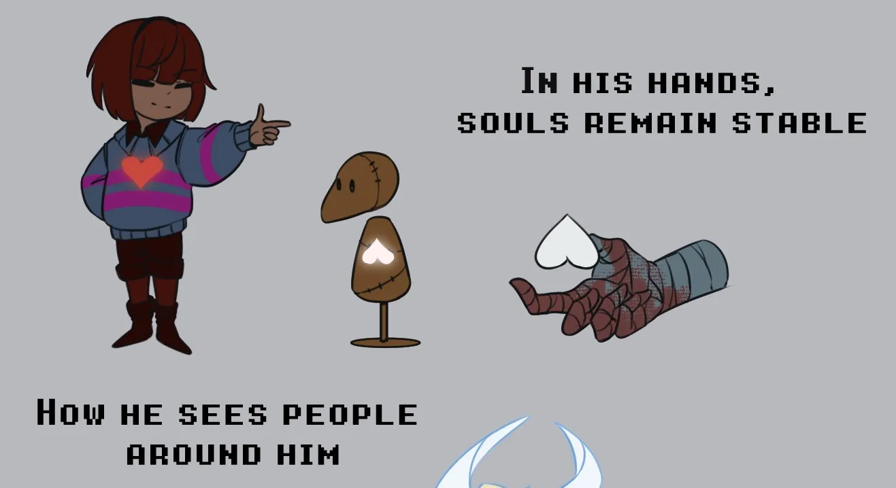
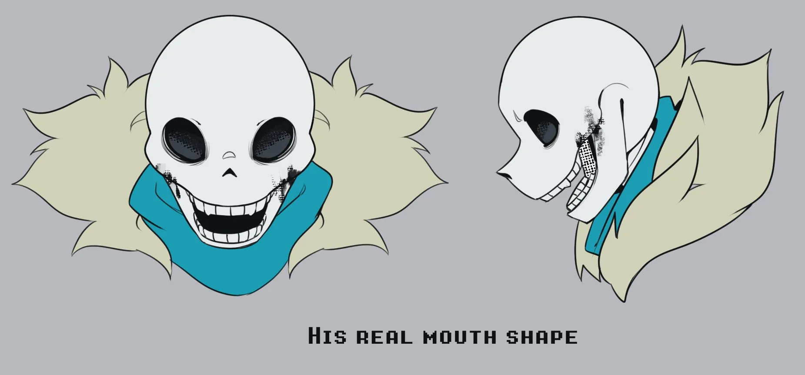
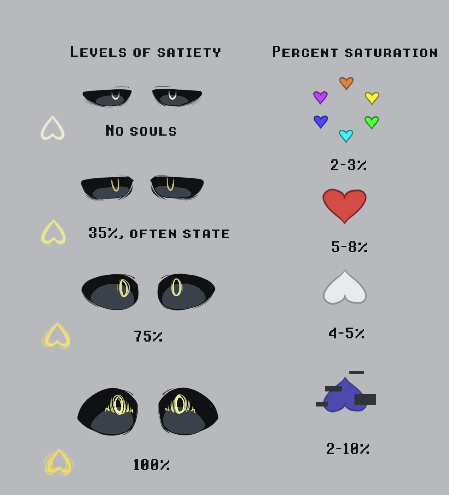
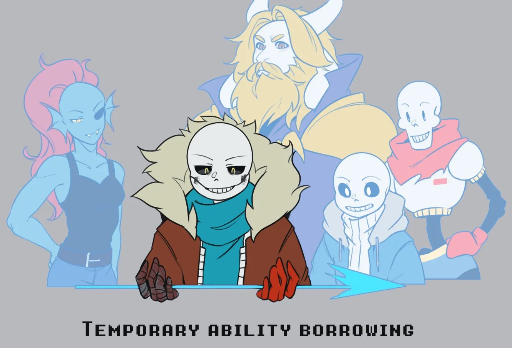
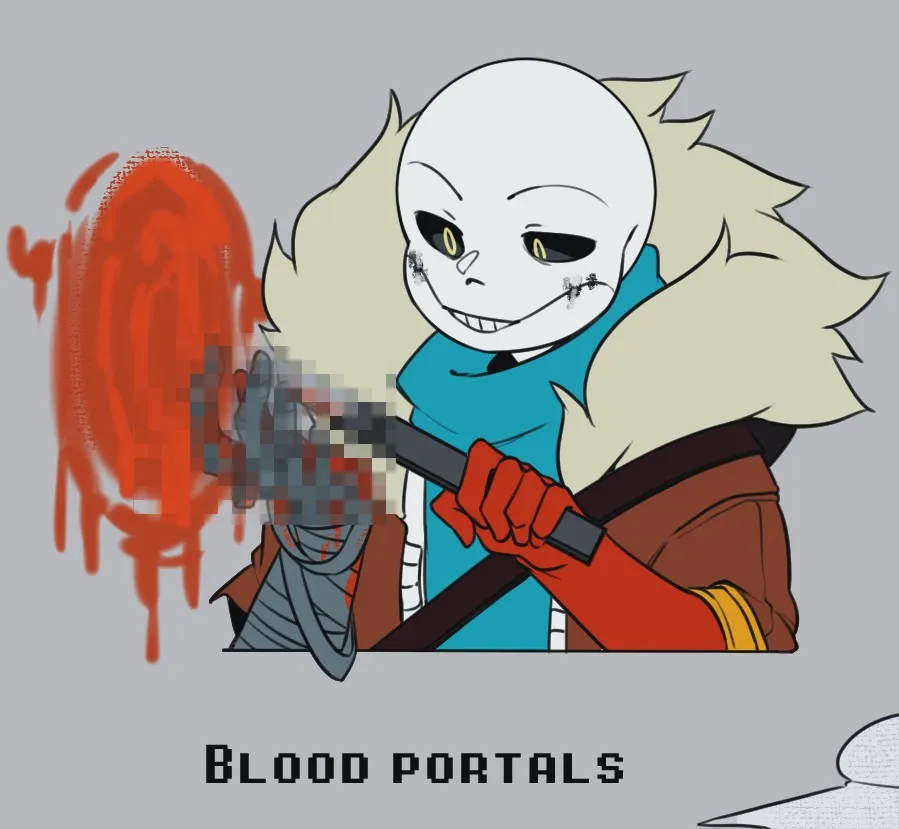
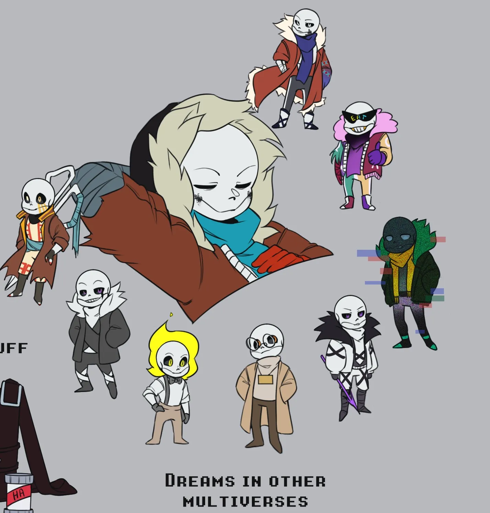

Холлоу — монстр с пустой душой, который путешествует по мультивселенной уже очень давно.
Он не друг или враг, он просто одинокий монстр. Без чувств, без эмоций, без переживаний,
без четкого самосознания. Всё, что движет им, это чувство голода. Как магического, так и психологического.
Предыстория
Раньше он был Сансом. Королевским стражником, что всегда был рядом с принцессой Чарой, оберегая ее от опасностей и бед.
Работа стражника всегда ему казалась скучной и утомительной, и лишь шутки и подколы Чары всегда его задорили. Но даже так,
пока семья Дримурров жила дружно, в его семье был раскол, ведь их отношения с отцом были всегда натянуты и часто заканчивались ссорами.
И так бы это продолжалось, пока его отец не явился прямо посреди его смены, прося всех собраться и объявив о создании оружия, живого-оружия.
И должен им был стать Санс, как лучший кандидат из всех. Санс изначально был против этого, но чувствуя обиду к отцу и долг перед Чарой, он решился на это.
Поначалу все шло хорошо, но вскоре всё обернулось катастрофой. Создание оружия было испорчено и вскоре вся вселенная была самоуничтожена, оставив в живых лишь одно существо.
Это существо было совершенно чистым, пустым холстом. Без магии, без воспоминаний, без чувств. Им был Холлоу.
Душа
Душа
Холлоу является достаточно уникальным среди множества монстров мультивселенной, так как он выделяется пустой во всех смыслах душой,
благодаря которой он и получил свое имя.

Пустая душа Холлоу является его благословением и проклятием.
С одной стороны, так как его душа пропитана энергией Ядра, он не способен умереть от старости и обычным образом.
С другой стороны, сама эта энергия не дает ему эмоций, от чего Холлоу похож на Инка в данной ситуации.
Не имеет стремлений, мечтаний и чувств.

Но если Инк переносит пустоту без серьезных последствий, для Холлоу опустошенное
состояние приводят к голосам в голове, запутанным мыслям и сомнениям в собственной идентификации - диссоциативное расстройство идентичности.
Поэтому Холлоу стремится всегда удерживать свою душу наполненной, чтобы не потерять себя самого.
И, в отличие от Инка, которому достаточно просто пить краски, чтобы испытывать эмоции, Холлоу нужно поглощать души, чтобы ощущать эмоции.
Любая душа содержит в себе эмоции и чувства владельца с его воспоминаниями, и именно это нужно Холлоу. Он поглощает чужие эмоции и личности,
пытаясь заполнить ими себя. Но даже так, он не может искренне испытывать эти чувства, а лишь искусно имитировать их, притворяясь.
Не способный испытать счастье, горечь, скорбь, страх, гнев и любовь.
Характер
Как такового характера у Холлоу просто нет. Своим существованием он ближе к бесчувственной машине, чем к человеку.
Холлоу всегда ставит своей целью собственное благополучие, не интересуясь ничем другим. В разговоре с Холлоу может казаться,
что он самый обычный монстр, который готов помочь или предать, но все это лишь маски, скрывающие его пустодушие.
Холлоу в первую очередь думает о себе, и это не эгоизм или самолюбие, а просто его основа выживания. И даже если
кажется, что он доверяет вам или проявляет к вам даже любовь, знайте, он одел еще одну маску на свое безэмоциональное лицо.
Внешность
 
Отличительная черта его внешности, это линии на лице, идущие от краев рта. Эти линии он скрывает какой-нибудь грязью,
чтобы не привлекать к ним излишнее внимание. Данные линии являются продолжениями его рта, деля нижнюю и
верхнюю челюсть, подобно как у настоящего скелета.

Отличительная черта его внешности, это линии на лице, идущие от краев рта. Эти линии он скрывает какой-нибудь грязью,
чтобы не привлекать к ним излишнее внимание. Данные линии являются продолжениями его рта, деля нижнюю и
верхнюю челюсть, подобно как у настоящего скелета.
Носимая им одежда украдена из самых разных AU. Фреш его за это прозвал даже бомжом мультивселенной.
Среди его одежды можно узнать перчатку Папируса, шарф Блу, ботинки из XTale. Остальная одежда вызывает вопросы о происхождении.
В своей сумке он хранит бинты и флаконы с душами, что "любезно" позаимствовал у Саенс!Санса, а также маркеры.
Способности
Обзор и захват душ

Имея достаточно большой опыт в работе с душами, зрение Холлоу позволяет ему видеть не только то, что
обычно видим мы, но и также душу каждого существа, которое ей обладает. Помимо этого, если душа монстра или
человека окажется в его руках, она, даже при отсутствии контейнера, не распадется и будет стабильно сохранять свое
состояние, пока не покинет область его руки.
Поглощение души

Главный процесс жизнедеятельности Холлоу. Во время него, лицо Холлоу меняется.
Когда Холлоу собирается съесть душу, он раскрывает свой рот во всю ширь, а его глазницы пустеют.

Только когда душа (или несколько душ) оказывается уже во рту, челюсти буквально схлопываются, а
душа разбивается на осколки со звуком треска стекла. После этого действия глаза Холлоу возвращаются и
на пару секунд обретают цвет, соответствующий цвету магии съеденной души.
Однако стоит учитывать, что разные души по-разному насыщают Холлоу, как и разные человеческие блюда имеют разные калории.
Человеческие души, вроде доброты, терпения и справедливости, имеют в среднем 2-3% насыщения.
Красная душа чаще всего самая питательная и насыщенная — 5-8%. У душ монстров средняя степень
насыщенности и часто варьируется, так как в разных вселенных, души монстров могут быть сильнее или слабее,
но в среднем процентное соотношение составляет 4-5%. Глючные же души, вроде душ, как у Эррора, Анти-Эррора
или Лоуд Глитча, имеют разную степень насыщенности и варьируются от 2% до 10%.
Перенимание
После поглощения какой-либо души, в процессе ее "переваривания", Холлоу не только считывает ее эмоции и воспоминания,
но и способности, давая себе возможность на временное их пользование.

Обладая невероятным опытом, Холлоу в совершенстве адаптируется к почти любым способностям, словно всегда ими обладал.
Если же он получает способность, принцип которой ему малоизвестен или неизвестен, Холлоу приходится проводить внутренний
анализ доступных воспоминаний души, чтобы на чужом опыте научиться этой силе. Хотя даже после подобного процесса,
степень владения незнакомой силой может быть не идеальным.
Точно неизвестно, как долго Холлоу может использовать перенятую силу, но известно, что чем больше раз он ее использует,
тем быстрее она начинает слабеть и пропадать из тела Холлоу, пока окончательно не исчезнет.
Способности невозможно смешивать, лишь использовать в связке.
Кровавые порталы

Несмотря на название, у Холлоу нет крови, так как он, очевидно, скелет. Но все же внутри его костей действительно
есть темно-алая жидкость, которая по своей работе действительно для Холлоу является кровью, но по составу не является ею.
Это то, как выглядят переваривающиеся в Холлоу души, которые он поглотил. Чем больше съел их Холлоу, тем больше в нем
"крови", чем меньше, тем меньше и ее.
Пролив подобную "кровь", она может подняться в воздух и создать овальный контур, в котором образуется белый,
с оттенками красного, портал. Такие порталы могут доставить Холлоу в любую точку мультивселенной, о которой он только
подумает. Если же место назначения не выбрано, портал отправит его в случайное место. Чем больше будет крови пролито,
тем дольше будет держаться портал, так как он не может быть постоянно стабилен и тратит пролитую кровь без остановки.
В чем причина наличия у Холлоу такой силы он не знает и сам, но он часто пользуется ею, в силу ее эффективности. Однако
она также приносит и неудобства, ведь теряя кровь, Холлоу также быстрее истощается, чего Холлоу себе практически не
позволяет.
Сны

Может показаться, что Холлоу не снятся сны или же эти сны состоит из оборванных воспоминаний жертв, которых Холлоу съел,
что отчасти правда. Но его сны позволяют ему также увидеть то, что другим просто недоступно.
Будучи существом, что пусто внутри, Холлоу находится на тонкой нити меж жизнью и смертью. Это нить настолько тонка, что
никакие расстояния меж измерениями и пространствами не могут ограничивать сознание Холлоу, позволяя тому видеть жизни
других версий себя из других мультивселенных. Он видит от первого лица иные версии своего пути, чьи обстоятельства и
события могут как различаться почти ни в чем, так и расходиться с привычной для себя версией разительно.
Данная сила не является способом коммуникации или коллективного сознания Холлоу из разных мультиверсов, она лишь дает
возможность узреть происходящее из чужих глаз, никак не влияя на окружение, пока основное тело спит. С помощью этих
снов почти все Холлоу и обладают необъятным багажом знаний, что может переплюнуть даже всезнание Кор!Фриск.
Дополнительная информация
* На каждую мультивселенную может существовать только один Холлоу.
* Холлоу не способен видеть воспоминания других версий себя, он способен лишь видеть, что происходит с другими версиями его самого в то время, пока он спит.
* Кровавые порталы Холлоу не могут привести к кому-то. Лишь куда-то.
* Ведет счет опустошенных им вселенных под перчаткой Папируса.
* Холлоу ни при каких обстоятельствах не съест души Дрима, Найтмера и Эррора. По этой причине он старается от всех них держаться подальше.
* Вы также можете прочитать информацию о Холлоу на сайте Undertale AU Вики
и в нашем Tumblr блоге.